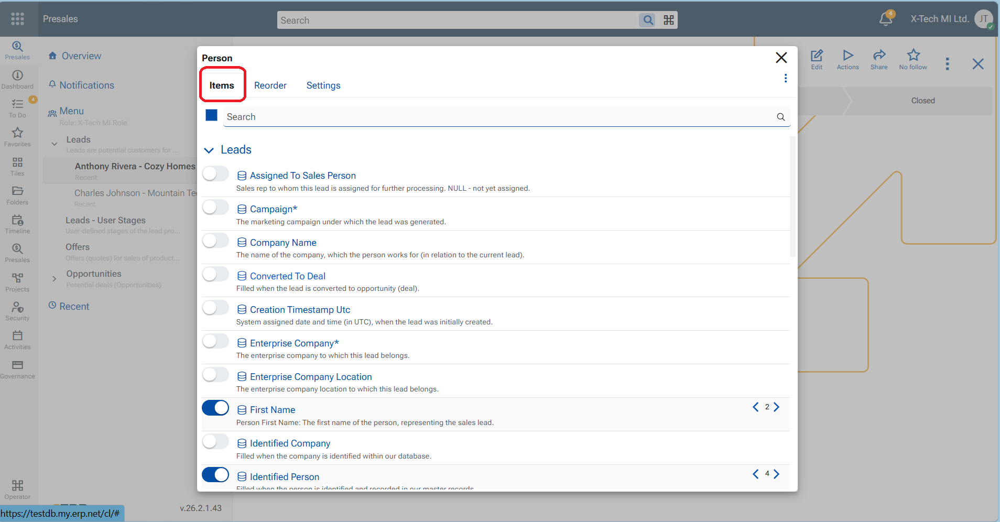
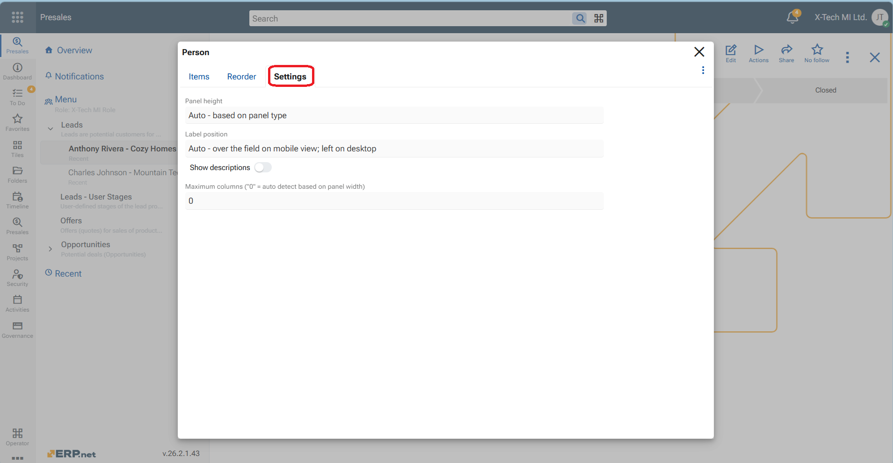

How to customize a main panel in ERP.net Web Client
The Main panel contains the fields that define a single record for a given entity type. It represents the core data of the record and is used both when creating and viewing records. The Customize panel option for the Main panel is accessed from the panel menu (the three-dot menu in the panel header),
Customizing the Main panel allows you to control how record data is presented on screen. You can:
- Show or hide fields
- Rename field labels
- Change the order of fields
- Set label position (top or left of the field)
- Show or hide field descriptions
- Define the panel height (number of visible rows)
- Choose the number of columns in which fields are arranged
These options let you tailor the Main panel to display only the most relevant information, reduce visual clutter, and optimize the layout for different working scenarios.
Steps
- In Panel manu, click on Customize panel option.
- In tab "Items" - Switch on the toggle beside the fields you want to see in the panel.
- In tab "Reorder" - Drag and drop vertically the fields to set their order one after another.
- Rename, Enter stop or Hide the fields is also possible.
- In tab "Settings" - Choose the panel height, position of labels, description and number of columns for the fields.
- Close the form with "X" when ready.
- Press the red "Save layout" button at the top ribbon to preserve the changes persistently.


